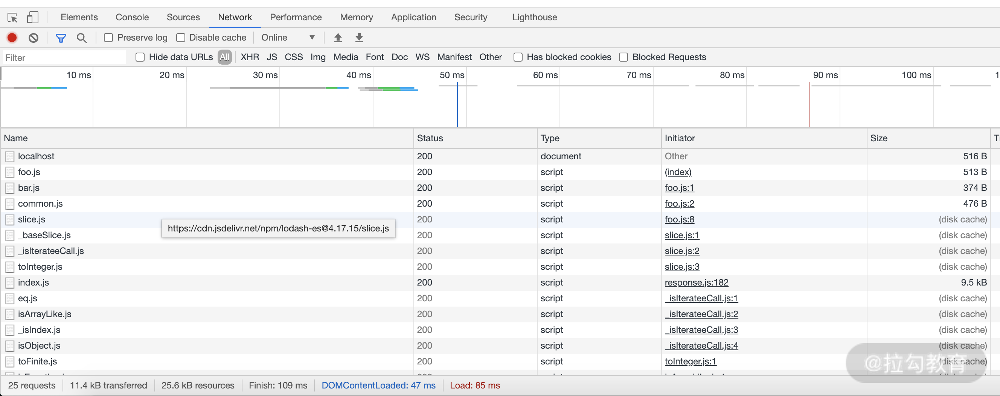
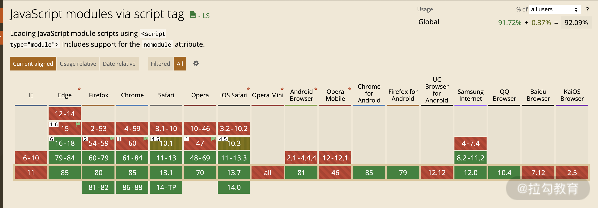
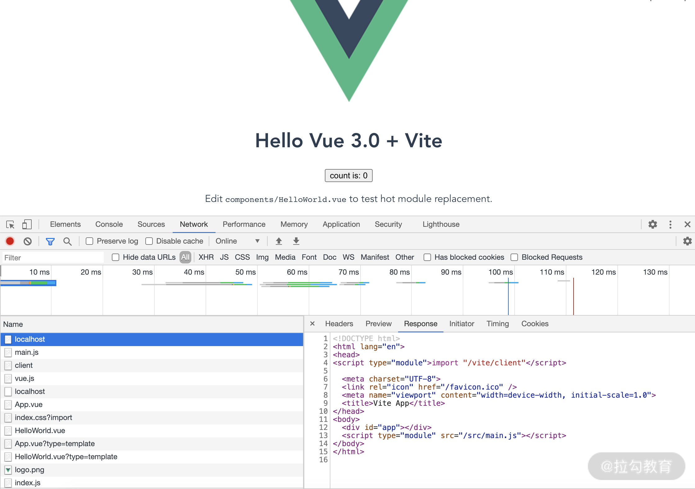
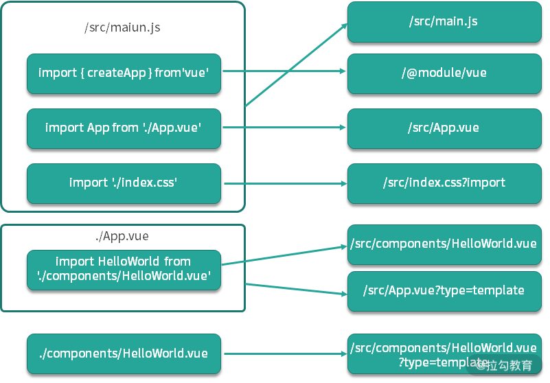

- 00 开篇词 建立上帝视角，全面系统掌握前端效率工程化.md.html
- 01 项目基石：前端脚手架工具探秘.md.html
- 02 界面调试：热更新技术如何开着飞机修引擎？.md.html
- 03 构建提速：如何正确使用 SourceMap？.md.html
- 04 接口调试：Mock 工具如何快速进行接口调试？.md.html
- 05 编码效率：如何提高编写代码的效率？.md.html
- 06 团队工具：如何利用云开发提升团队开发效率？.md.html
- 07 低代码工具：如何用更少的代码实现更灵活的需求.md.html
- 08 无代码工具：如何做到不写代码就能高效交付？.md.html
- 09 构建总览：前端构建工具的演进.md.html
- 10 流程分解：Webpack 的完整构建流程.md.html
- 11 编译提效：如何为 Webpack 编译阶段提速？.md.html
- 12 打包提效：如何为 Webpack 打包阶段提速？.md.html
- 13 缓存优化：那些基于缓存的优化方案.md.html
- 14 增量构建：Webpack 中的增量构建.md.html
- 15 版本特性：Webpack 5 中的优化细节.md.html
- 16 无包构建：盘点那些 No-bundle 的构建方案.md.html
- 17 部署初探：为什么一般不在开发环境下部署代码？.md.html
- 18 工具盘点：掌握那些流行的代码部署工具.md.html
- 19 安装提效：部署流程中的依赖安装效率优化.md.html
- 20 流程优化：部署流程中的构建流程策略优化.md.html
- 21 容器方案：从构建到部署，容器化方案的优势有哪些？.md.html
- 22 案例分析：搭建基本的前端高效部署系统.md.html
- 23 结束语 前端效率工程化的未来展望.md.html
16 无包构建：盘点那些 No-bundle 的构建方案
上节课我们讨论了 Webpack 的最新版本 Webpack 5 所带来的提效新功能。思考题是 Webpack 5 中的持久化缓存究竟会影响哪些构建环节呢？
通过对 compiler.cache.hook.get 的追踪不难发现：持久化缓存一共影响下面这些环节与内置的插件：
- 编译模块：ResolverCachePlugin、Compilation/modules。
- 优化模块：FlagDependencyExportsPlugin、ModuleConcatenationPlugin。
- 生成代码：Compilation/codeGeneration、Compilation/assets。
- 优化产物：TerserWebpackPlugin、RealContentHashPlugin。
正是通过这样多环节的缓存读写控制，才打造出 Webpack 5 高效的持久化缓存功能。
在之前的课程里我们详细分解了 Webpack 构建工具的效率优化方案，这节课我们来聊一聊今年比较火的另一种构建工具思路：无包构建（No-Bundle/Unbundle）。
什么是无包构建
什么是无包构建呢？这是一个与基于模块化打包的构建方案相对的概念。
在“ 第 9 课时|构建总览：前端构建工具的演进”中谈到过，目前主流的构建工具，例如 Webpack、Rollup 等都是基于一个或多个入口点模块，通过依赖分析将有依赖关系的模块打包到一起，最后形成少数几个产物代码包，因此这些工具也被称为打包工具。只不过，这些工具的构建过程除了打包外，还包括了模块编译和代码优化等，因此称为打包式构建工具或许更恰当。
而无包构建是指这样一类构建方式：在构建时只需处理模块的编译而无须打包，把模块间的**依赖关系完全交给浏览器来处理。**浏览器会加载入口模块，分析依赖后，再通过网络请求加载被依赖的模块。通过这样的方式简化构建时的处理过程，提升构建效率。
这种通过浏览器原生的模块进行解析的方式又称为 Native-ESM（Native ES Module）。下面我们就通过一个简单示例来展示这种基于浏览器的模块加载过程（16_nobundle/simple-esm），如下面的代码和图片所示：
//./src/index.html
...
<script type="module" src="./modules/foo.js"></script>
...
//.src/modules/foo.js
import { bar } from './bar.js'
import { appendHTML } from './common.js'
...
import('https://cdn.jsdelivr.net/npm/[email protected]/slice.js').then((module) => {...})

从示例中可以看到，在没有任何构建工具处理的情况下，在页面中引入带有 type="module" 属性的 script，浏览器就会在加载入口模块时依次加载了所有被依赖的模块。下面我们就来深入了解一下这种基于浏览器加载 JS 模块的技术的细节。
基于浏览器的 JS 模块加载功能
从 caniuse 网站中可以看到，目前大部分主流的浏览器都已支持 JavaScript modules 这一特性，如下图所示：

[图片来源：https://caniuse.com/es6-module]
我们来总结这种加载方式的注意点。
HTML 中的 Script 引用
- 入口模块文件在页面中引用时需要带上**type="module"**属性。对应的，存在 type="nomodule"，即支持 ES Module 的现代浏览器，它会忽略 type="nomodule" 属性的 script，因此可以用作旧浏览器中的降级方案。
- 带有 type="module" 属性的 script在浏览器中通过 defer 的方式异步执行（异步下载，不阻塞 HTML，顺次执行），即使是行内的 script 代码也遵循这一原则（而普通的行内 script 代码则忽略 defer 属性）。
- 带有 type="module" 属性且带有async属性的 script，在浏览器中通过 async 的方式异步执行（异步下载，不阻塞 HTML，按该模块和所依赖的模块下载完成的先后顺序执行，无视 DOM 中的加载顺序），即使是行内的 script 代码，也遵循这一原则（而普通的行内 script 代码则忽略 async 属性）。
- 即使多次加载相同模块，也只会执行一次。
模块内依赖的引用
- 只能使用 import ... from '...' 的 ES6 风格的模块导入方式，或者使用 import(...).then(...) 的 ES6 动态导入方式，不支持其他模块化规范的引用方式（例如 require、define 等）。
- 导入的模块只支持使用相对路径（'/xxx', './xxx', '../xxx'）和 URL 方式（'https://xxx', 'http://xxx'）进行引用，不支持直接使用包名开头的方式（'xxxx', 'xxx/xxx'）。
- 只支持引用MIME Type为 text/javascript 方式的模块，不支持其他类型文件的加载（例如 CSS 等）。
为什么需要构建工具
从上面的技术细节中我们会发现，对于一个普通的项目而言，要使用这种加载方案仍然有几个主要问题：
- 许多其他类型的文件需要编译处理为 ES6 模块才能被浏览器正常加载（JSX、Vue、TS、CSS、Image 等）。
- 许多第三方依赖包在通过第三方 URL 引用时，不仅过程烦琐，而且往往难以进行灵活的版本控制与更新，因此需要合适的方式来解决引用路径的问题。
- 对于现实中的项目开发而言，一些便利的辅助开发技术，例如热更新等还是需要由构建工具来提供。
下面，我们分析 Vite 和 Snowpack 这两个有代表性的构建工具是如何解决上面的问题的。
Vite
Vite 是 Vue 框架的作者尤雨溪最新推出的基于 Native-ESM 的 Web 构建工具。它在开发环境下基于 Native-ESM 处理构建过程，只编译不打包，在生产环境下则基于 Rollup 打包。我们还是先通过 Vite 的官方示例来观察它的使用效果，如下面的代码和图片所示（示例代码参见 example-vite）：
npm init vite-app example-vite
cd example-vite
npm install
npm run dev

可以看到，运行示例代码后，在浏览器中只引入了 src/main.js 这一个入口模块，但是在网络面板中却依次加载了若干依赖模块，包括外部模块 vue 和 css。依赖图如下：

可以看到，经过 Vite 处理后，浏览器中加载的模块与源代码中导入的模块相比发生了变化，这些变化包括对外部依赖包的处理，对 vue 文件的处理，对 css 文件的处理等。下面我们就来逐个分析其中的变化。
对导入模块的解析
对 HTML 文件的预处理
当启动 Vite 时，会通过 serverPluginHtml.ts 注入 /vite/client 运行时的依赖模块，该模块用于处理热更新，以及提供更新 CSS 的方法 updateStyle。
对外部依赖包的解析
首先是对不带路径前缀的外部依赖包（也称为Bare Modules）的解析，例如上图中在示例源代码中导入了 'vue' 模块，但是在浏览器的网络请求中变为了请求 /@module/vue。
这个解析过程在 Vite 中主要通过三个文件来处理：
- resolver.ts 负责找到对应在 node_modules 中的真实依赖包代码（Vite 会在启动服务时对项目 package.json 中的 dependencies 做预处理读取并存入缓存目录 node_modules/.vite_opt_cache 中）。
- serverPluginModuleRewrite.ts 负责把源码中的 bare modules 加上 /@module/ 前缀。
- serverPluginModuleResolve.ts 负责解析加上前缀后的模块。
对 Vue文件的解析
对 Vue 文件的解析是通过 serverPluginVue.ts 处理的，分离出 Vue 代码中的 script/template/style 代码片段，并分别转换为 JS 模块，然后将 template/style 模块的 import写到script 模块代码的头部。因此在浏览器访问时，一个 Vue 源代码文件会分裂为 2~3 的关联请求（例如上面的 /src/App.vue 和 /src/App.vue?type=template，如果 App.vue 中包含 <style> 则会产生第 3 个请求 /src/App.vue?type=style）。
对 CSS 文件的解析
对 CSS 文件的解析是通过 serverPluginCSS.ts 处理的，解析过程主要是将 CSS 文件的内容转换为下面的 JS 代码模块，其中的 updateStyle 由注入 HTML 中的 /vite/client 模块提供，如下面的代码所示：
import { updateStyle } from "/vite/client"
const css = "..."
updateStyle("\"...\"", css) // id, cssContent
export default css
以上就是示例代码中主要文件类型的基本解析逻辑，可以看到，Vite 正是通过这些解析器来解决不同类型文件以 JS 模块的方式在浏览器中加载的问题。在 Vite 源码中还包含了其他更多文件类型的解析器，例如 JSON、TS、SASS 等，这里就不一一列举了，感兴趣的话，你可以进一步查阅官方文档。
Vite 中的其他辅助功能
除了提供这些解析器的能力外，Vite 还提供了其他便捷的构建功能，大致整理如下：
- 多框架：除了在默认的 Vue 中使用外，还支持在 React 和 Preact 项目中使用。工具默认提供了 Vue、React 和 Preact 对应的脚手架模板。
- 热更新（HMR）：默认提供的 3 种框架的脚手架模板中都内置了 HMR 功能，同时也提供了 HMR 的 API 供第三方插件或项目代码使用。
- 自定义配置文件：支持使用自定义配置文件来细化构建配置，配置项功能参考 config.ts。
- HTTPS 与 HTTP/2：支持使用 --https 启动参数来开启使用 HTTPS 和 HTTP/2 协议的开发服务器。
- 服务代理：在自定义配置中支持配置代理，将部分请求代理到第三方服务。
- 模式与环境变量：支持通过 mode 来指定构建模式为 development 或 production。相应模式下自动读取 dotenv 类型的环境变量配置文件（例如 .env.production.local）。
- 生产环境打包：生产环境使用 Rollup 进行打包，支持传入自定义配置，配置项功能参考 build/index.ts。
Vite 的使用限制
Vite 的使用限制如下：
- 面向支持 ES6 的现代浏览器，在生产环境下，编译目标参数 esBuildTarget 的默认值为 es2019，最低支持版本为 es2015（因为内部会使用 esbuild 处理编译压缩，用来获得最快的构建速度）。
- 对 Vue 框架的支持目前仅限于最新的 Vue 3 版本，不兼容更低版本。
Snowpack
Snowpack 是另一个比较知名的无包构建工具，从整体功能来说和上述 Vite工具提供的功能大致相同，主要差异点在 Snowpack 在生产环境下默认使用无包构建而非打包模式（可以通过引入打包插件例如 @snowpack/plugin-webpack 来实现打包模式），而 Vite 仅在开发模式下使用。示例代码参见 example-snow。下面我们简单整理下两者的异同。
与 Vite 相同的功能点
两者都支持各种代码转换加载器、热更新、环境变量（需要安装 dotenv 插件）、服务代理、HTTPS 与 HTTP/2 等。
与 Vite 的差异点
- 相同的功能，实现细节不同：例如对 Bare Module 的处理，除了转换后前缀名称不同外（Vite 使用 /@module/ 前缀，而 Snowpack 使用 /web_modules/ 前缀)，Vite 支持类似 "AAA/BBB" 类型的子模块引用方式，而 Snowpack 目前尚不支持。
- 工具稳定性：截止写稿的时间点（2020 年 9 月 21 日），Vite 的最新版本为 v1.0.0-rc4，仍未发布第一个稳定版本。而 Snowpack 自年初发布第一个稳定版本以来，已经更新到了 v2.11.1 版本。
- 插件体系：除了版本差异外，Snowpack 提供了较完善的插件体系，支持用户和社区发布自定义插件，而 Vite 虽然也内置了许多插件，但目前并没有提供自定义插件的相关文档。
- 打包工具：在生产环境下，Vite 使用 Rollup 作为打包工具，而 Snowpack 则需要引入插件来实现打包功能，官方支持的打包插件有 @snowpack/plugin-webpack 和 @snowpack/plugin-parcel，暂未提供 Rollup 对应的插件。
- 特殊优化：Vite 中内置了对 Vue 的大量构建优化，因此对 Vue 项目而言，选择 Vite 通常可以获得更好的开发体验。
无包构建与打包构建
通过上面的 Vite 等无包构建工具的功能介绍可以发现，同 Webpack 等主流打包构建工具相比，无包构建流程的优缺点都十分明显。
无包构建的优点
无包构建的最大优势在于构建速度快，尤其是启动服务的初次构建速度要比目前主流的打包构建工具要快很多，原因如下：
- 初次构建启动快：打包构建流程在初次启动时需要进行一系列的模块依赖分析与编译，而在无包构建流程中，这些工作都是在浏览器渲染页面时异步处理的，启动服务时只需要做少量的优化处理即可（例如缓存项目依赖的 Bare Modules），所以启动非常快。
- 按需编译：在打包构建流程中，启动服务时即需要完整编译打包所有模块，而无包构建流程是在浏览器渲染时，根据入口模块分析加载所需模块，编译过程按需处理，因此相比之下处理内容更少，速度也会更快
- 增量构建速度快：在修改代码后的 rebuild 过程中，主流的打包构建中仍然包含编译被修改的模块和打包产物这两个主要流程，因此相比之下，只需处理编译单个模块的无包构建在速度上也会更胜一筹（尽管在打包构建工具中，也可以通过分包等方式尽可能地减少两者的差距）。
无包构建的缺点
- 浏览器网络请求数量剧增：无包构建最主要面对的问题是，它的运行模式决定了在一般项目里，渲染页面所需发起的请求数远比打包构建要多得多，使得打开页面会产生瀑布式的大量网络请求，将对页面的渲染造成延迟。这对于服务稳定性和访问性能要求更高的生产环境而言，通常是不太能接受的，尤其对不支持 HTTP/2 的服务器而言，这种处理更是灾难性的。因此，一般是在开发环境下才使用无包构建，在生产环境下则仍旧使用打包构建。
- 浏览器的兼容性：无包构建要求浏览器支持 JavaScript module 特性，尽管目前的主流浏览器已大多支持，但是对于需要兼容旧浏览器的项目而言，仍然不可能在生产环境下使用。而在开发环境下则通常没有这种顾虑。
总结
这节课我们主要讨论了今年比较热门的无包构建。
无包构建产生的基础是浏览器对 JS 模块加载的支持，这样才可能把构建过程中分析模块依赖关系并打包的过程变为在浏览器中逐个加载引用的模块。但是这种加载模块的方式在实际项目应用场景下还存在一些阻碍，于是有了无包构建工具。
在这些工具里，我们主要介绍了 Vite 和 Snowpack，希望通过介绍他们的开发模式的基本工作流程和差异点，让你对这类工具的功能特点有一个基本的了解。
今天的课后思考题是，为什么 Vite/Snowpack 这样的无包构建工具要比 Webpack 这样的打包构建工具速度更快呢？
随着这节课的结束，构建优化模块也就告一段落了。下节课开始我们将进入部署优化模块。